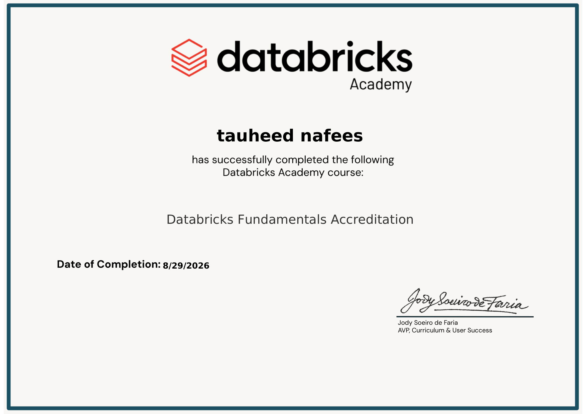
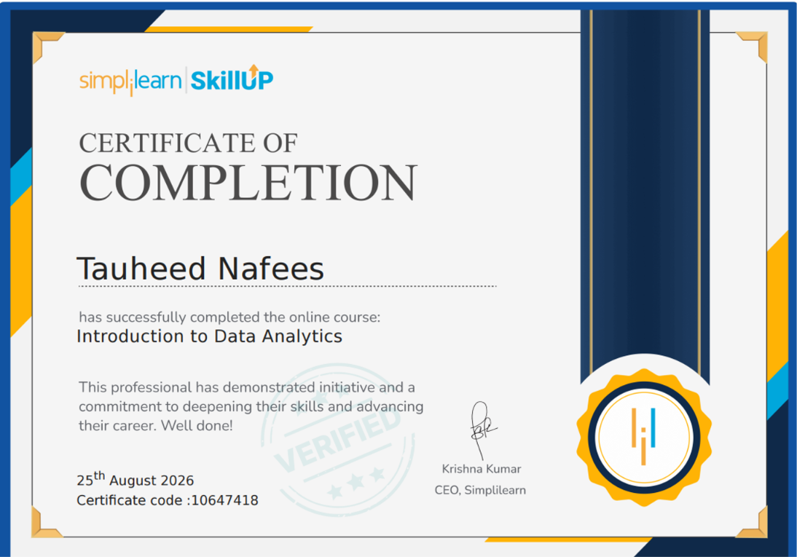
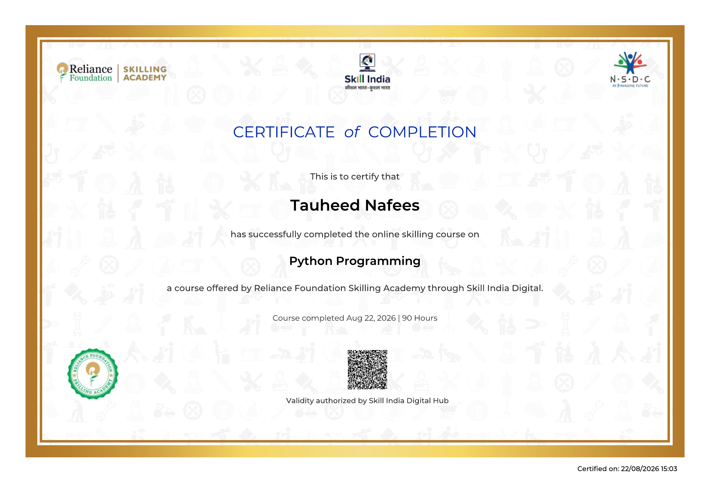
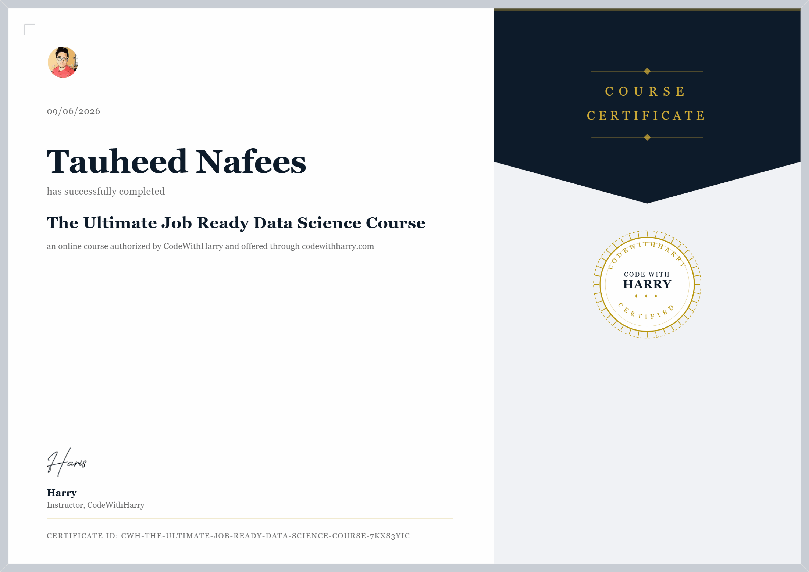
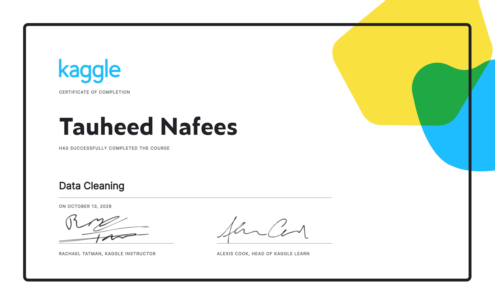
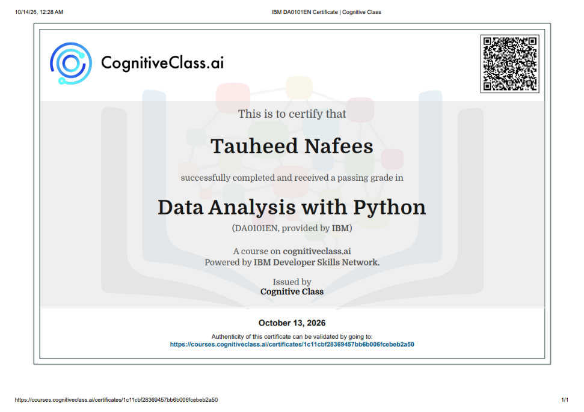

Credentials
Accredited certifications validating proficiency across data analysis, Python, and cloud analytics fundamentals.

Databricks Fundamentals Accreditation
Databricks fundamentals accreditation covering core concepts of the Databricks data and analytics platform.

Introduction to Data Analytics
Comprehensive foundation in exploratory analytics, statistical methods, hypothesis testing, and business decision support.

Data Analytics Training Program
AICTE & ICAC Approved program covering end-to-end Python data pipeline construction, statistical visualization, and EDA.

Python Programming
Python programming fundamentals covering core syntax, programming concepts, and practical problem-solving.

The Ultimate Job Ready Data Science Course
Comprehensive bootcamp covering end-to-end Python analytics, machine learning pipelines, regression, and statistical evaluation.

Data Cleaning
Completed the Kaggle Data Cleaning course, learning practical techniques for identifying and handling missing values and improving data quality.

Data Analysis with Python
Completed the IBM-provided course covering data analysis techniques using Python.